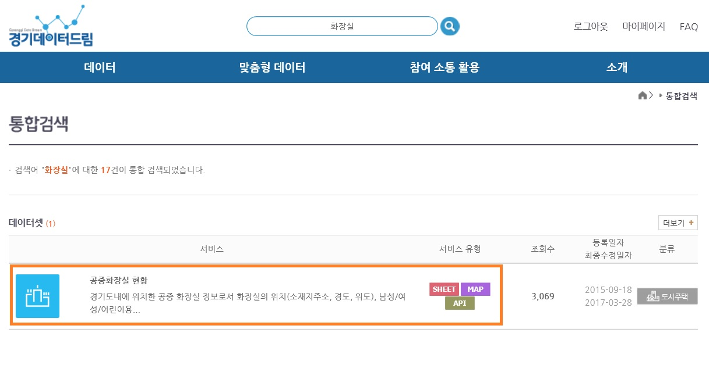

Homework 1
사용자와 과업분석
1.기획개요
▶어떤 사용자와 과업을 대상으로 하는가?
서울에 위치한 화장실은 비교적 지도에서 잘 나와있고 블로그에도 많은 정보가 있고, 게다가 서울화장실 지도라는 앱이 따로 있을 정도이다. 반면 경기도에 위치한 화장실은 블로그에도 지도에도 거의 표시되지않으며 지도는 특정 장소의 위치와 걸리는 시간을 보여줄 뿐 상세한 정보와 걸리는 시간을 서로비교 할 수 없는 불편함이 존재하였다. 따라서 경기도에 위치한 화장실을 찾으려는 사람들을 대상으로 이 웹페이지를 기획하게 되었다.
▶어떤 데이터를 활용해야 하는가?
경기데이터드림(http://data.gg.go.kr/portal/mainPage.do)에서 경기도내에 위치한 공중 화장실 정보를 조회 할 수 있는 open api를 제공하고 있습니다. xml형태로 되어 있으며 화장실 위치, 남성/여성/장앤용 소변기유무, 개방시간을 확인 할 수 있습니다.
▶어떤 서비스를 제공하려 하는가?
사용자가 선택한 지역에 있는 화장실의 위치를 지도에 표시해서 보여줍니다. 지도에 표시된 마커를 선택하면 현재 위치에서부터 걸리는 시간을 보여주고 화장실의 상세정보를 확인 할 수 있습니다.
2.사용자와 과업분석
사용자 과업분석[1]
첫번째 사용자의 과업분석 동영상을 보면 무언가의 위치를 찾을때 지도를 먼저 떠올려 검색하는 경향이 있었다. 조사결과 구글지도는 아무래도 외국회사의 지도다보니 네이버 지도처럼 위치정보를 거의 얻을수 없었다. 관광지의 주변 화장실을 검색하는 것임에도 불구하고 너무 먼 곳의 화장실까지 나오는것을 보았다.
검색과 길찾기의 기능이 따로따로 분리되어 있어서 현재위치에서부터 선택한 도착지까지의 걸리는 시간과 또다른 도착지까지의 걸리는 시간을 비교하는데 검색과 길찾기를 왔다갔다해야하는 매우 큰 불편함이 있었다.
-해결방안 : 아무래도 화장실 지도다 보니 급한 사람들에게는 걸리는 시간이 제일 크게 여기진다고 생각해서 마커를 클릭했을시 바로바로 걸리는 시간이 뜨도록 구현 할 것이다.
마커로 표시된 화장실을 클릭하면 화장실의 이름과 주소까지만뜨고 더 자세한 상세내용까지 나와있지 않았다. 그리고 사용자로부터 상세보기라는 버튼을 누르면 새로운 탭이 뜨는 불편함을 나중에 추가적으로 듣게되었다.
-해결방안 : 마커로 표시된 화장실을 클릭하면 화장실의 상세정보(장애인화장실 유무, 어린이전용 유무, 건물이름, 전화번호, 개방시간)을 추가적인 클릭없이 말풍선에 바로 띄울수 있도록 할 것이다.
사용자 과업분석[2]
두번째 사용자 과업분석 동영상은 기획개요와도 관련있는 내용이다. 사용자에게 광화문화장실을 검색해보라 했을때 지도를 클릭하는 것처럼 보였으나 최근까지 큰 시위가 계속해서 일어났던 장소여서 그런지 지도에는 없는 화장실을 블로그에서 200여개의 많은 개방화장실의 위치와 개방시간을 알려주고있었다. 게다가 조사결과 TTOK라는 서울 화장실 지도라는 앱도 존재하였다. 하지만 경기도의 일산, 파주도 많은 사람들이 오가는 곳임에도 불구하고 어느 블로그에서도 관련 자료를 찾을수 없는 모습을 발견했다. 광화문 화장실을 검색했을 때는 제일 윗단에 지도가 있었지만, 경기도 지역 화장실을 검색했을시에는 지도보단 다른 화장실수리 관련 게시글을 먼저 볼 수 있었다.
이처럼 지도에는 없는 화장실을 사용자가 직접 추가하는 기능을 넣어볼 예정이다. 자바스크립트의 파일 입출력을 활용해서 구현해볼 생각이다.
3. 데이터 식별 및 검증
활용하려는 데이터는 '경기데이터드림'에서 제공하는 화장실 관련 API이다. 아래사진의 API로 경기도내에 위치한 공중 화장실 정보로서 화장실의 위치(소재지주소, 경도, 위도), 남성/여성/어린이용 변기수 및 소변기수 등의 정보를 알수 있으며, 그 위치를 네이버 지도api를 활용해서 마커를 찍을 예정이다.
아래의 버튼을 클릭하면 경기데이터드림 사이트에서 화장실 관련 Open API들을 신청하여 활용 할 수 있습니다.
아래의 버튼은 공공데이터api를 활용한 모습이다. 네이버 지도api도 가지고 왔다.
4. 서비스 구체화(스토리보드)
1) 예상되는 첫 화면이다. 한눈에 어떤 웹페이지인지 알 수 있도록 하였다. 화면을 클릭하면 다음화면으로 넘어간다.
2) 크게 두가지의 메뉴가 뜬다. 근처 화장실 찾기와 지도에 없는 화장실 추가하기버튼이다.
3) 두가지 방식으로 현재 위치를 선택할 수 있다. 주소로 자신의 위치를 입력하는 것과 자신의 위치를 그냥 지도에 찍는 방식이다. 주소로 검색시는 드랍다운메뉴로 만들예정이다.
4) 검색결과에 따라서 여러개의 마커들이 표시되고, 표시된 마커를 클릭하면 상세정보를 바로 알 수 있다.
5) 위에 +을 누르면 바로 사용자가 화장실을 추가할 수 있도록 할 수 있다.